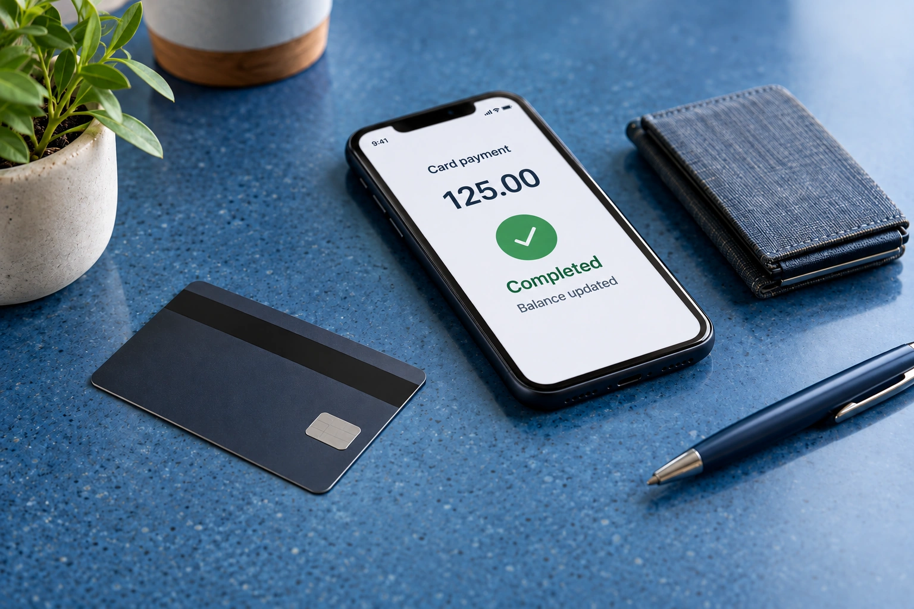

Keep Credit Card Payments From Becoming Duplicate Expenses
A payment from your business bank account to a business credit card normally reduces the card liability and the bank balance. It is not another expense if the individual card purchases are already recorded. Record purchases, payments, interest and fees according to what each transaction actually represents.
Keep the purchase and payment separate
Suppose the business buys $240 of supplies on a credit card. The purchase records the supplies cost and increases the amount owed on the card. Paying $240 from checking later settles that debt. Categorizing the payment as supplies again would count the same cost twice.
Match both account records
The payment may appear as a withdrawal in the bank feed and a credit in the card feed. Match or transfer the activity so it represents one connected payment rather than unrelated income and expense entries. Check dates around month end because the bank and card issuer may post the payment on different days.
Review the full card statement
Interest, fees, refunds and credits have their own meaning and should not be hidden within a payment entry. Reconcile the card account and the bank account separately using their statements. Personal charges and payments from an owner’s personal account require additional classification based on the facts and business structure. Preserve that explanation rather than forcing every card payment through the same expense category.